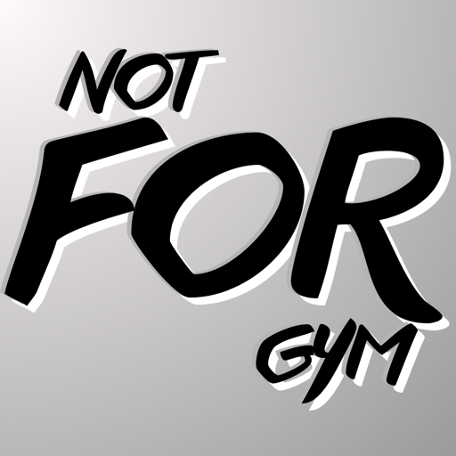
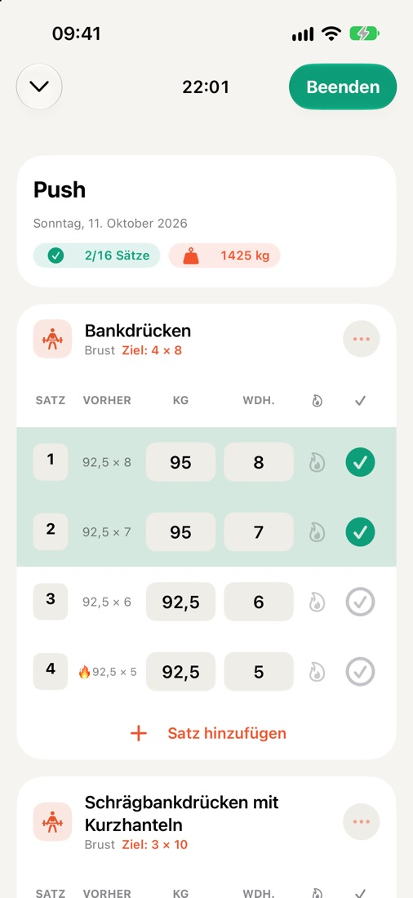
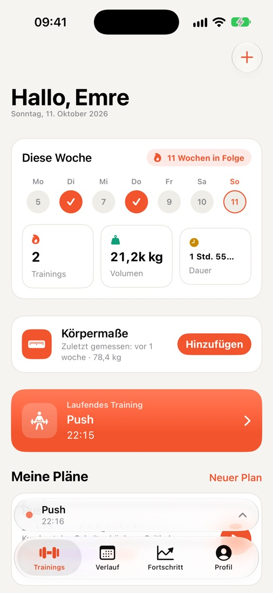
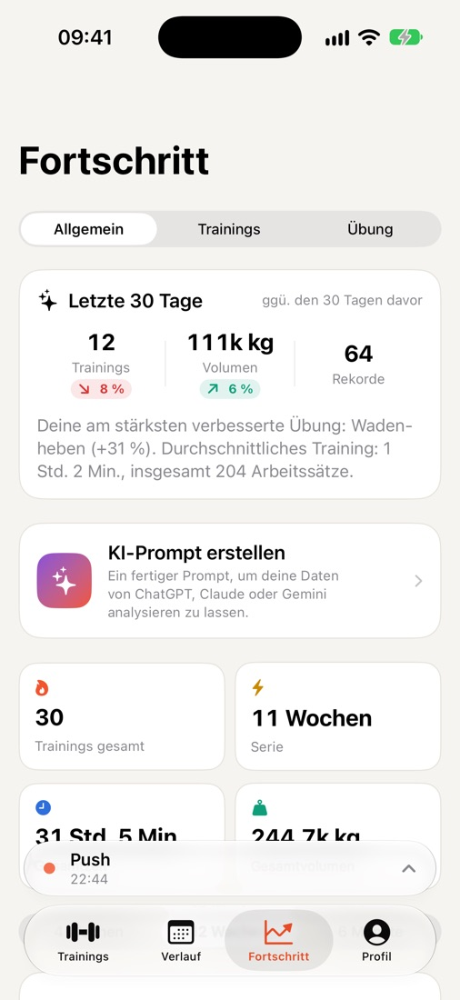
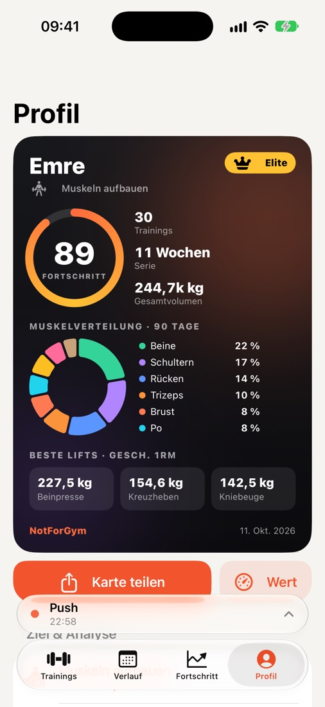
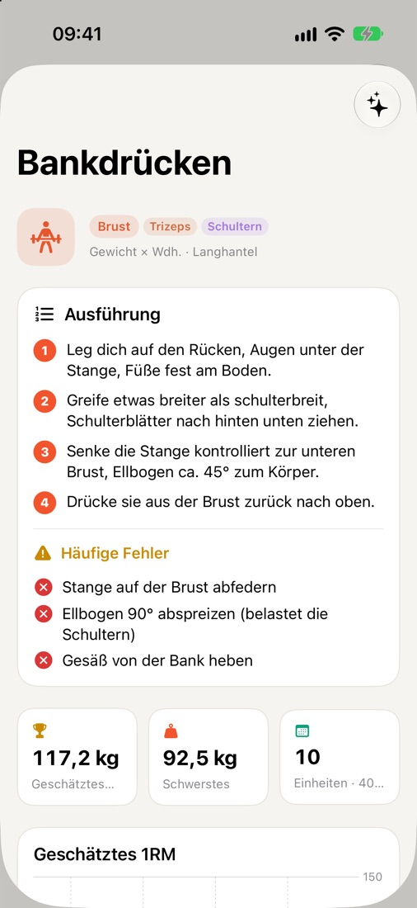
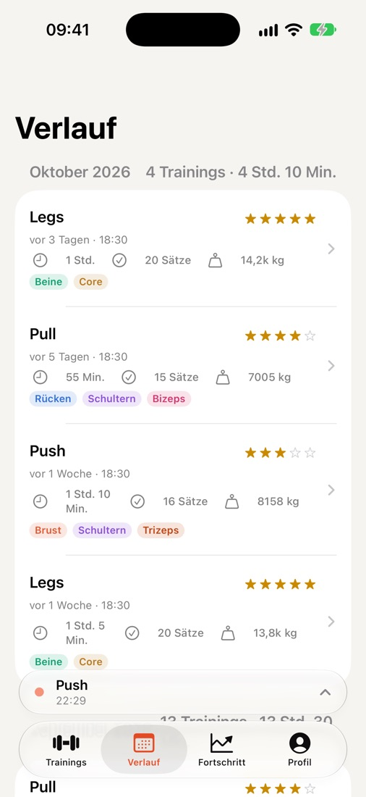

Jeden Satz notieren.
Jeden Fortschritt sehen.
NotForGym ist ein schnelles, schnörkelloses Trainingstagebuch für iPhone und Apple Watch. Die Werte vom letzten Mal stehen neben jedem Satz, der Pausentimer läuft auf dem Sperrbildschirm und dein Fortschritt zeigt sich in Rekorden und Diagrammen – ohne Konto, ohne Registrierung.

Gemacht für die Zeit zwischen den Sätzen
Alles, was du im Gym brauchst – und nichts, was du nicht brauchst.
Sätze blitzschnell erfassen
Gewicht und Wiederholungen vom letzten Training neben jedem Satz. Aufwärmsätze, Sätze bis zum Muskelversagen, Notizen und Schwierigkeit mit einem Tippen.
Pausentimer & Live-Aktivität
Der Pausen-Countdown läuft auf dem Sperrbildschirm und in der Dynamic Island – Satz abhaken oder Pause überspringen, ohne die App zu öffnen.
Apple Watch
Sieh deinen nächsten Satz, hake ihn ab und spüre am Handgelenk, wenn die Pause vorbei ist.
Fortschritt & Rekorde
Wöchentliche Volumen-Diagramme, geschätztes 1RM, persönliche Rekorde und eine Muskelgruppen-Verteilung, die zeigt, was du vernachlässigst.
Über 250 Übungen
Eine umfangreiche Bibliothek mit Equipment und Zielmuskeln, dazu Schritt-für-Schritt-Anleitungen und häufige Fehler für die beliebtesten Übungen.
Körpermaße
Verfolge Gewicht und Körpermaße über die Zeit – auf Wunsch mit einer wöchentlichen Erinnerung.
Apple Health
Abgeschlossene Trainings können in Apple Health gesichert werden und zählen so für deine Aktivitätsringe.
iCloud-Synchronisierung
Deine Daten werden über deine eigene private iCloud synchronisiert und sind nach einer Neuinstallation oder auf einem neuen iPhone wieder da.
Athletenkarte & Widget
Eine teilbare Karte mit Fortschrittswert, Serie und Top-Leistungen – auch als Widget für Home- und Sperrbildschirm.
KI-fertige Zusammenfassung
Erstelle aus deinen Trainingsdaten einen fertigen Prompt und füge ihn in deinen gewohnten KI-Assistenten ein.
CSV-Import & -Export
Deine Daten gehören dir. Exportiere jederzeit alles als Tabelle oder importiere es wieder.
8 Sprachen
English, Türkçe, Deutsch, Español, Português (Brasil), Français, Italiano und 日本語.
Ein genauerer Blick





Kostenlos. Alle Funktionen.
- Niemals Werbung während des Trainings
- Werbung mit einem Kauf entfernen, auf allen Geräten wiederherstellen
- Kein Konto, kein Abo
Dein Training bleibt deins.
- Keine Registrierung, keine E-Mail nötig
- Gesundheitsdaten werden nie für Werbung genutzt
- Alles mit einer Taste löschen